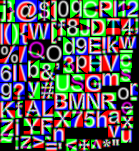

Distance Field Rendering
As mentioned multiple times, bitmap fonts are the fastest way to render text in Starling. However, if you need to display text in multiple sizes, you will soon discover that bitmap fonts do not scale well. Scaling up makes them blurry, scaling down introduces aliasing problems. Thus, for best results, one has to embed the font in all the sizes used within the application.
Distance Field Rendering solves this issue: it allows bitmap fonts and other single-color shapes to be drawn without jagged edges, even at high magnifications. The technique was first introduced in a SIGGRAPH paper by Valve Software. To support this feature, Starling contains a special MeshStyle implementation.
To understand how it works, I will start by showing you how to use it on a single image. This could e.g. be an icon you want to use throughout your application.
Rendering a single Image
We had plenty of birds in this manual already, so let’s go for a predator this time! My cat qualifies for the job. I’ve got her portrait as a black vector outline, which is perfect for this use-case.
Unfortunately, Starling can’t display vector images; we need Seven as a bitmap texture (PNG format).
That works great as long as we want to display the cat in roughly the original size (scale == 1).
However, when we enlarge the image, it quickly becomes blurry.
This is exactly what we can avoid by converting this image into a distance field texture.
Starling actually contains a handy little tool that takes care of this conversion process.
It’s called the "Field Agent" and can be found in the util directory of the Starling repository.
You need both Ruby and ImageMagick installed to use the field agent.
Look at the accompanying README file to find out how to install those dependencies.
The tool works both on Windows and macOS.
|
I started with a high-resolution PNG version of the cat and passed that to the field agent.
ruby field_agent.rb cat.png cat-df.png --scale 0.25 --auto-size
This will create a distance field texture with 25% of the original size. The field agent works best if you pass it a high resolution texture and let it scale that down. The distance field encodes the details of the shape, so it can be much smaller than the input texture.
The original, sharp outline of the cat has been replaced with a blurry gradient. That’s what a distance field is about: in each pixel, it encodes the distance to the closest edge in the original shape.
| This texture is actually just pure white on a transparent background; I colored the background black just so you can see the result better. |
The amount of blurriness is called spread. The field agent uses a default of eight pixels, but you can customize that. A higher spread allows better scaling and makes it easier to add special effects (more on those later), but its possible range depends on the input image. If the input contains very thin lines, there’s simply not enough room for a high spread.
To display this texture in Starling, we simply load the texture and assign it to an image. Assigning the DistanceFieldStyle will make Starling switch to distance field rendering.
var texture:Texture = assets.getTexture("cat-df");
var image:Image = new Image(texture);
image.style = new DistanceFieldStyle();
image.color = 0x0; // we want a black cat
addChild(image);With this style applied, the texture stays perfectly crisp even with high scale values. You only see small artifacts around very fine-grained areas (like Seven’s haircut).
Depending on the "spread" you used when creating the texture, you might need to update the softness parameter to get the sharpness / smoothness you’d like to have.
That’s the first parameter of the style’s constructor.
Rule of thumb: softness = 1.0 / spread.
|
Render Modes
That’s actually just the most basic use of distance field textures. The distance field style supports a couple of different render modes; namely an outline, a drop shadow, and a glow. Those effects are all rendered in a specific fragment shader, which means that they do not require any additional draw calls. In other words, these effects are basically coming for free, performance wise!
var style:DistanceFieldStyle = new DistanceFieldStyle();
style.setupDropShadow(); // or
style.setupOutline(); // or
style.setupGlow();Pretty cool, huh?
| The only limitation: you cannot combine two modes, e.g. to have both outline and drop shadow. You can still resort back to fragment filters for that, though. |
Rendering Text
The characteristics of distance field rendering make it perfect for text. Good news: Starling’s standard bitmap font class works really well with the distance field style. By now, there are even great tools for creating suitable font textures.
Remember, a bitmap font consists of an atlas-texture that contains all the glyphs and an XML file describing the attributes of each glyph. You can’t simply use field agent to convert the texture in a post-processing step (at least not easily), since each glyph requires some padding around it to make up for the spread. Therefore, it’s best to use a bitmap font tool that supports distance field textures natively.
Some of the GUI-tools I described in the Bitmap Fonts chapter can be configured to create distance field output. However, to be blunt, none of them does that job particularly well. If you are not afraid of some command line magic, I recommend another one instead.
msdf-bmfont-xml
Msdf-bmfont-xml runs on both Windows and macOS (refer to its GitHub page for installation instructions). The quality of the output is phenomenal, and it even supports an advanced type of distance field texture — we’ll look at that shortly.
For now, let’s start with the basics: let’s create a distance field font for, say, Arial.ttf:
msdf-bmfont -o arial.png -t sdf --smart-size Arial.ttf-
-o arial.pngdetermines the filename for the font texture. -
-t sdfindicates that we want to create a single-channel distance field font. All distance field textures we discussed so far were single channel textures. -
--smart-sizewill make sure the texture uses the smallest possible size.
This command will create the familiar pair of png and fnt files that you can load in your app.
What’s more, it adds an additional data element to the fnt file that contains all relevant distance field settings.
As a result, Starling is able to set everything up for you automatically.
[Embed(source="arial.fnt", mimeType="application/octet-stream")]
public static final FontXml:Class;
[Embed(source="arial.png")]
public static final FontTexture:Class;
var texture:Texture = Texture.fromEmbeddedAsset(FontTexture);
var xml:XML = XML(new FontXml());
var font:BitmapFont = new BitmapFont(texture, xml)
TextField.registerCompositor(font, font.name);
var textField:TextField = new TextField(400, 100, "May the font be with you!");
textField.format.setTo(font.name, 32);
addChild(textField);That’s right, there is no special set-up code to write — you create font and TextField just like you always do! Behind the scenes, Starling will automatically set up a DistanceFieldStyle instance with the correct settings.
Multi-Channel Distance Field Textures
A multi-channel distance field texture uses all channels of an RGB-texture to encode the distance information. This leads to an even higher rendering quality.
As mentioned above, msdf-bmfont-xml supports this distance field type — in fact, it even defaults to it.
Please run the command-line tool again, but omit the -t sdf parameter.
msdf-bmfont -o arial.png --smart-size Arial.ttfThis time, you will end up with a multi-channel distance field texture. Here’s what it looks like:

Again, Starling will recognize the texture and will render in "multi-channel" style automatically. The reward for all this hard work: such a font can now be used at almost any scale, and with all the flexible render modes I showed above.